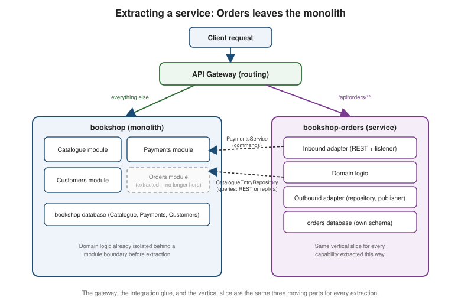

Migration Path: From a Monolith to Microservices
|
This content was generated with the assistance of AI and should be verified against the official documentation before being relied on in production. |
This is the centrepiece of the Architecture Decisions and Migration Paths section. Every other migration page prepares Bookshop for this moment
or picks up after it: Migration Path: From a
Legacy Stack to a Modern One gets Bookshop onto a modern stack, and
Migration Path: From a Monolith to a
Modular Monolith draws enforced module boundaries inside it. This page covers the step some, but not all, of
those modules eventually take: leaving bookshop entirely to become an independently deployable, independently
scalable service. It is written step by step, with the Bookshop example carried through every section, because
extracting a service touches more at once — domain model, database, integration, data consistency, security, and
deployment — than any other migration path here.
Three strategies for eliminating the monolith
Richardson’s Microservices Patterns (ch. 13.2) names three strategies for shrinking a monolith into services, and they are not mutually exclusive — a real migration usually runs the first and third at the same time, indefinitely.
Strategy 1: Implement new features as services
The simplest strategy is also Richardson’s first piece of advice for a team standing in a hole: stop digging.
Every new feature built directly inside the monolith is more code that will eventually need to be untangled out of
it; building it as its own service from day one avoids creating that debt in the first place. Bookshop’s own
example is Recommendations — book suggestions based on a customer’s order history and browsing behavior,
which has no existing code inside bookshop to migrate at all. It is born as bookshop-recommendations, its own
deployable and database, from the very first commit, integrated with the rest of Bookshop only through the
gateway and the events described later on this page.
Not every new feature is a good candidate, though. A feature is better left inside the monolith when it is too
small to justify a whole deployable — a new service’s operational cost (its own pipeline, on-call, database)
can easily exceed the feature’s own complexity — or too coupled to existing monolith data to isolate cleanly:
needing synchronous, read-your-writes access to a dozen tables Order and Customer already own is a sign the
extraction boundary has not been found yet, not a sign the feature should be extracted anyway.
Strategy 2: Separate the presentation tier from the backend
Migration
Path: From a Legacy Stack to a Modern One already covers this strategy in full — exposing the monolith’s
business logic as an API and rebuilding the UI as a client-rendered SPA on top of it. It is repeated here only
because Richardson counts it as one of the three, and because it matters for this page for exactly one reason:
Bookshop’s UI already talks to bookshop only through its REST API by the time this page’s work begins, which is
what lets every capability extraction below change nothing the UI depends on.
Strategy 3: Extract a business capability into a service
The third strategy, and the one the rest of this page is about, is extracting one existing business capability out of the monolith entirely. Each extraction produces the same shape every time — a vertical slice, not a horizontal layer:
-
Inbound adapters — a REST controller, a message listener, or both — replacing the calls that used to reach the capability’s code directly, in-process.
-
Domain logic — the capability’s own entities, aggregates, and business rules, moved out of
bookshopunchanged where possible; Migration Path: From a Monolith to a Modular Monolith already isolated this logic behind a module boundary, which is exactly what makes the move mechanical rather than an untangling exercise done under pressure. -
Outbound adapters — repositories, REST clients, or event publishers/consumers — replacing the direct method calls and shared-table queries the capability’s code used to make into other modules.
-
Its own schema — a database the new service owns exclusively, containing only the tables that capability’s domain logic needs, per Strategic Design's database- per-bounded-context rule.
The "Figures" section below shows this shape concretely, with Orders — the first capability in the extraction sequence — leaving the monolith.
Splitting the domain model
From object references to ids
A capability’s domain logic is easy to extract only once nothing inside it holds a direct, in-process object reference to an entity owned by a different capability — because once the code is running in two separate processes, that reference cannot be followed at all. The fix is the one modular monolith stage already applies: replace the reference with an id, and reach the referenced entity, if it is ever needed, through that other capability’s own API or events instead of a field.
Bookshop’s Order god class is the running example. By the time it reaches the modular monolith stage, Order
already holds a ShipmentId rather than an embedded Shipment:
package com.example.orders.domain;
// Modular-monolith stage: reference, not embedded state -- Shipping still lives in the same process
public class Order {
private OrderId id;
private CustomerId customerId;
private List<OrderLine> lines;
private PaymentStatus paymentStatus;
private ShipmentId shipmentId; // reference only, resolved through Shipping's module API
}That single change — done once, during modularisation, for a reason that had nothing to do with microservices
yet — is what makes the further step, physically extracting Shipping into bookshop-shipping with its own
database, require no change to Order at all. Order never held a Shipment object; it held an id before
the extraction and it holds the exact same id after. Only the infrastructure underneath `ShipmentId’s resolution
changes — from an in-process module-API call to a REST call or a replica read, covered below. This is the
concrete payoff of doing the domain-model split early, at the modular-monolith stage, rather than as part of the
extraction itself: the harder problem is already solved by the time the deployable actually splits.
Refactoring the database
The database underneath a capability being extracted needs the same two refactorings Ambler and Sadalage’s Refactoring Databases names for reorganizing a schema without breaking the applications on top of it:
-
Split table — a table mixing columns two different capabilities own splits into two tables, one per owner, joined only by a shared key. Bookshop’s
orderstable historically carriedshipping_statusandshipping_addressalongside order lines and payment status; splitting it separates those columns into their ownshipmentstable before the Shipping capability’s code ever moves. -
Move table — a table already belonging entirely to one capability relocates wholesale into that capability’s own database once it becomes a separate service, with nothing left behind in the monolith’s schema except, temporarily, a read-only synchronized copy for anything that still reads it directly.
For Bookshop, the shipments table (already split out of orders above) is a move-table candidate the
moment Shipping becomes its own service: it relocates wholesale into `bookshop-shipping’s own PostgreSQL
database, and the copy left inside `bookshop’s schema is deleted once nothing in the monolith reads it directly.
Replicating data back to the monolith
Not every place in bookshop that used to read Order.shippingStatus directly can be rewritten to call the new
bookshop-shipping service synchronously without a large, risky change across the monolith’s own codebase.
Richardson’s answer (ch. 13.2.3) is to accept that cost as temporary: the monolith keeps a read-only replicated
field — a local copy of shippingStatus, kept current by consuming ShipmentStatusChanged events published by
bookshop-shipping — so every existing call site keeps reading a local column exactly as before, while the
field’s source of truth has already moved to the new service. The replicated column is deleted, and those call
sites finally rewritten to call bookshop-shipping directly, only once the migration has time to revisit them — not as a blocking prerequisite of the extraction itself.
What to extract first
Not every remaining module is worth extracting in the same order, and getting the order wrong wastes the migration’s early momentum on the module least likely to matter. Three questions rank the backlog:
-
Does extracting this module accelerate development — does it unblock a team that is currently waiting on changes to code it does not own, or let it release on its own schedule?
-
Does it solve a concrete performance, scaling, or reliability problem — a module with a different load shape or a different availability requirement than the rest of the monolith, the same four signals the modular monolith page already names?
-
Does it unblock other extractions — is another module’s own extraction waiting on this one moving first, because of a dependency between them?
Two ways to run the backlog once ranked: freeze the monolith and extract on demand — stop adding new code to
bookshop and pull the next module out only when a concrete need forces the issue — suits a small team reacting
to real pressure as it arrives; a planned, ranked backlog, worked in a fixed order regardless of which
pressure shows up first, suits a team large enough to run several extractions in parallel, which is the approach
Bookshop takes below.
Designing how the service and the monolith collaborate
Extracting one capability at a time means the newly extracted service and the still-standing monolith have to
collaborate correctly for as long as any capability remains inside bookshop — often the whole rest of the
migration.
The integration glue
Code on either side that needs something from the other reaches it through a small interface, never directly:
-
A repository-style interface for queries —
CatalogueEntryRepository, called from inside `bookshop’s Orders capability whenever it needs a book’s title, cover, or price to render an order confirmation. -
A service-style interface for commands —
PaymentsService, called whenever Orders needs to actually do something in Payments, such as authorizing a charge, rather than merely read its state.
package com.example.orders.application.port;
public interface CatalogueEntryRepository {
Optional<CatalogueEntry> findById(BookId bookId);
}
public interface PaymentsService {
PaymentAuthorization authorize(CustomerId customerId, Money amount, OrderId orderId);
}Two different adapters can sit behind CatalogueEntryRepository, and the choice between them is the query-side
question every extraction has to answer:
package com.example.orders.infrastructure.catalogue;
@Component
class RestCatalogueEntryRepository implements CatalogueEntryRepository {
private final RestClient catalogueClient; // synchronous call -- couples Orders' own latency to Catalogue's
RestCatalogueEntryRepository(RestClient.Builder builder) {
this.catalogueClient = builder.baseUrl("http://bookshop-catalogue/api/catalogue").build();
}
@Override
public Optional<CatalogueEntry> findById(BookId bookId) {
return Optional.ofNullable(
catalogueClient.get().uri("/{id}", bookId.value()).retrieve().body(CatalogueEntry.class));
}
}The alternative, ReplicaCatalogueEntryRepository, implements the same interface over a local
catalogue_entry_replica table instead, kept current by a @KafkaListener consuming BookPublished and
BookPriceChanged events from bookshop-catalogue rather than calling it synchronously.
Querying via REST is simpler and always reads the latest state, at the cost of coupling the caller’s own
availability and latency to the callee’s. Keeping a replica fed by domain events costs an extra table, a
consumer, and eventual consistency, but decouples runtime availability entirely — Orders keeps serving order
confirmations even while bookshop-catalogue is being redeployed. Bookshop favors the replica for read-heavy,
latency-sensitive paths like order confirmation, and a direct REST call for anything read rarely enough that the
coupling cost never matters in practice.
Updates via transactional messaging apply the same reasoning to the command side: when
RestPaymentsService.authorize needs to both change bookshop’s own state and reliably notify
`bookshop-payments, the two writes cannot share one ACID transaction across two databases, so the outbound
message is written to Transactional Outbox's own
outbox table in the same local transaction as `bookshop’s state change, and a relay publishes it afterwards — the same reliability guarantee a single commit gives inside one database, built instead out of one local
transaction plus a durable, separately-relayed message.
The anti-corruption layer, in both directions
Whichever direction data flows, the shape on one side of the boundary must never leak into the other’s domain
model unmodified. Migration
Path: From a Legacy Stack to a Modern One already covers the anti-corruption layer in depth; the same adapter
role applies here in both directions — translating bookshop-payments’ response into whatever shape Orders
needs on the way in, and `bookshop’s own `Order fields into `bookshop-payments’ request shape on the way out.
How the monolith publishes domain events
Extracted services that consume Bookshop’s events need the monolith to actually emit them, and there are two ways to make that happen:
-
Insert a publish call at each write site. The straightforward approach: wherever `bookshop’s code already changes `Order’s state, add a call that publishes the corresponding event, wrapped in Transactional Outbox so the publish and the state change commit together. This is the right default whenever the monolith’s own code can still be changed.
-
Transaction-log tailing or CDC, via Kafka Connect and a Debezium-style connector, when it cannot — a vendored module, a piece of code the team is not confident touching yet, or simply a case where getting every write site right by hand is too error-prone. CDC reads the monolith’s own committed transaction log and turns each change into an event without a single line of `bookshop’s code changing, the same trade-off the legacy migration path already makes between dual writes and CDC. The source connectors that do this are covered, one database at a time, in Database Migration (for example PostgreSQL Connector and MySQL & MariaDB Connectors).
How the monolith subscribes to events
The monolith also needs to react to events an already-extracted service publishes — bookshop-shipping
publishing ShipmentStatusChanged, which the replicated-field technique above depends on. When bookshop can
consume messages natively (it is still a live Spring Boot application, and Spring for Apache Kafka adds a
@KafkaListener as easily inside the monolith as anywhere else), that is the default. Only where the monolith
genuinely cannot host a consumer — an old runtime, a pipeline nobody wants to touch — does a small helper
application step in: a standalone consumer, deployed separately, that applies the change directly against
`bookshop’s own database (or calls an internal API it exposes) on the monolith’s behalf.
Data consistency between monolith and service
Why splitting a transaction forces a saga
Before extraction, authorizing a payment while placing an order is one ACID transaction inside bookshop: reserve
inventory, authorize payment, and update `Order’s status all commit together, or none of them do. The moment
Payments becomes its own service with its own database,
Why Distributed Transactions Don’t Work
Across Microservices applies directly — that single commit is no longer available. The only way to keep the
operation correct without one is Sagas' own answer: a sequence of
local transactions, one per participant, coordinated by messages instead of a shared commit.
The monolith as an unwilling saga participant
A newly extracted service is usually designed as a saga participant from the start — its own local transaction,
its own compensating transaction if the saga needs to undo its step. The monolith’s remaining code was never
designed that way: adding a compensating transaction to bookshop’s own order-placement logic means
introducing an explicit semantic-lock state — an `APPROVAL_PENDING-style flag scattered across
whichever tables the compensation touches — into code written, correctly, to assume ACID rollback would always
be available. Every such state is new code, new tests, and a new way for the monolith’s logic to be wrong, purely
to satisfy a saga the extraction created.
The rule that avoids this cost: keep the monolith’s own transaction pivot or retriable, never compensatable. Sagas already defines these roles — compensatable (needs an explicit undo), pivot (the point of no return; nothing before it needs compensation, nothing after it can fail for a business reason), and retriable (guaranteed to eventually succeed). Choosing the extraction order so the monolith’s own step in every saga lands on one of the last two roles means `bookshop’s existing code never needs a compensating transaction written for it.
Sequencing the extractions
Bookshop extracts capabilities in the order Orders → Customers → Catalogue/Inventory → Payments, and at each step, the monolith’s own remaining transaction stays a pivot or retriable step in the resulting saga:
| Step | Resulting saga (place-order flow) | Monolith’s own role |
|---|---|---|
Start (all in |
One local ACID transaction: reserve inventory, authorize payment, update |
The whole transaction — not yet a saga. |
1. Orders extracted |
|
Pivot — once the monolith’s combined inventory-and-payment step commits, the order is committed to; nothing before it needs undoing. |
2. Customers extracted |
|
Still pivot — the customer check happens entirely before the monolith’s step, so the monolith’s role in the saga does not change. |
3. Catalogue/Inventory extracted |
|
Pivot — payment authorization can still fail for a business reason (a declined card), which is why it is not retriable, but once it commits nothing before it needs undoing and nothing after it can fail, so it never needs a compensating transaction of its own. |
4. Payments extracted |
Every step now runs in its own service: |
No monolith step remains — |
Because inventory reservation — the one genuinely compensatable step in the whole saga — is extracted into
Catalogue before Payments, the monolith’s own final remaining step (payment authorization) stays the saga’s
pivot at every stage, never a compensatable step. Reversing that order — extracting Payments first, while
inventory reservation still lived inside bookshop — would have forced the monolith to grow a compensating
transaction of its own for a step it does not even own any more, exactly the cost the rule above exists to avoid.
Security
Before any capability is extracted, bookshop’s own Thymeleaf pages authenticate with a server-side session
cookie the monolith itself issues and validates. That model does not survive the first extraction: a request that
now fans out to `bookshop-orders, bookshop-catalogue, and bookshop-payments needs every one of those services
to know who the caller is, and none of them shares `bookshop’s session store. The replacement is a user-info
cookie or token, issued once at the edge and propagated by the gateway to every service a request reaches, so
each service verifies the caller’s identity from the token itself rather than a session it does not own.
OAuth for Browser-Based Apps and
Authorization Code and PKCE cover exactly this flow.
Deployment
Bookshop extracts and deploys one service at a time, each containerised the same way bookshop itself already
is, run on whatever container platform the team already operates — a single Docker host, a managed container
service, whatever exists before the migration starts. Standing up Kubernetes is not a prerequisite for the first
extraction, or the third; it earns its place only once there are enough services to justify the orchestration
it provides — scheduling, service discovery, rolling restarts across enough deployables that doing it by hand has
become the bottleneck. Kubernetes and OpenShift covers that
platform once Bookshop reaches it.
Checklist per extracted service
Before calling any single extraction done:
-
The service’s domain logic depends on no class from `bookshop’s own packages — every reference crosses the boundary as an id, a REST call, or an event.
-
The service owns its own database; any table moved out of `bookshop’s schema has been deleted there once nothing reads it directly any more, and its queries/commands are reached only through the repository-style and service-style interfaces defined for it.
-
Its saga step — if it participates in the place-order saga — is compensatable, pivot, or retriable, and that role is documented, not implicit.
-
The gateway routes its paths to the new service, the monolith’s corresponding code has been deleted (not merely left unreachable), and it authenticates every request from the propagated user-info token.
-
It is deployed and monitored independently of `bookshop’s own deployment pipeline.
Figures

The place-order flow before any extraction — one local ACID transaction inside the monolith, not yet a saga:
The same flow at step 3 of the sequence above, once Orders, Customers, and Catalogue/Inventory have left and only
Payments remains inside the monolith. It is now a saga, and the monolith’s single remaining step — payment
authorization — is its pivot: it can still fail for a business reason (a declined card), but once it commits
nothing before it needs undoing and nothing after it can fail, so bookshop never needs a compensating
transaction. The only compensatable step, inventory reservation, already lives in bookshop-catalogue:
Querying the monolith by API versus keeping a replica fed by events — the same choice `CatalogueEntryRepository’s two adapters make above:
The extraction order and why each step comes when it does:
| Order | Capability | Why this step |
|---|---|---|
1 |
Orders |
Accelerates development — Orders changes fastest of the five capabilities and is where most team friction with the shared codebase already shows up. |
2 |
Customers |
Unblocks other extractions — every other capability calls Customers for identity or loyalty data, so extracting it early gives the remaining extractions a stable service to call instead of a moving target inside the monolith. |
3 |
Catalogue/Inventory |
Performance, scaling, reliability — Catalogue’s read-heavy, memory-hungry load pattern needs its own scaling
profile independent of the rest of |
4 |
Payments |
Reliability — Payments must stay highly available regardless of load elsewhere in the system; extracting it last, after inventory reservation already left the monolith, leaves the monolith’s own remaining step retriable rather than compensatable. |